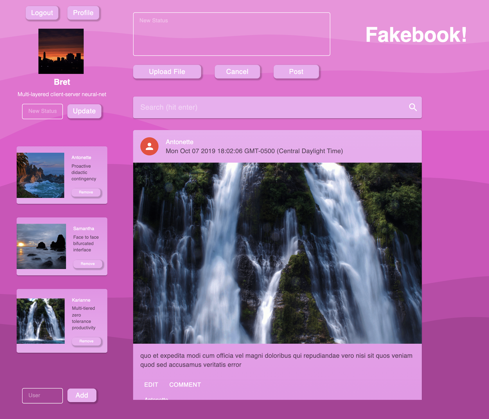
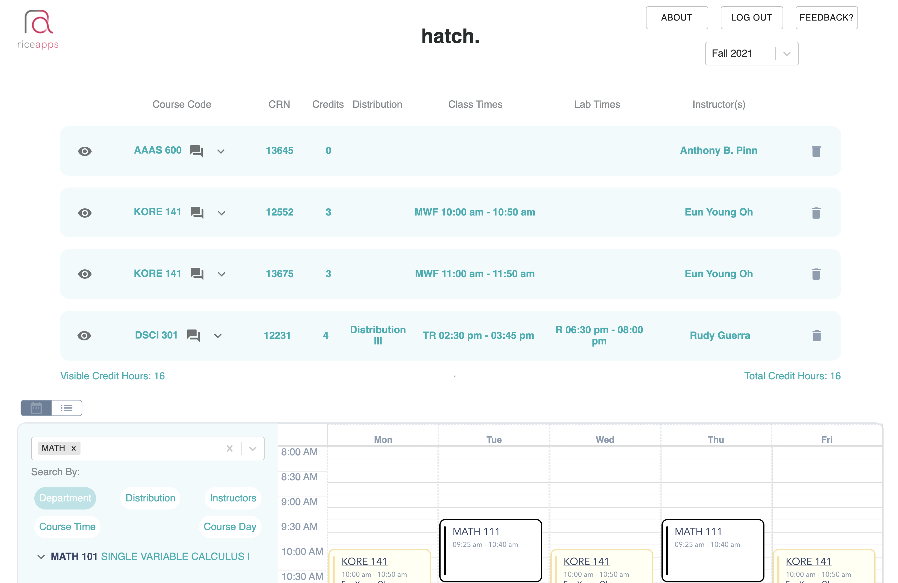
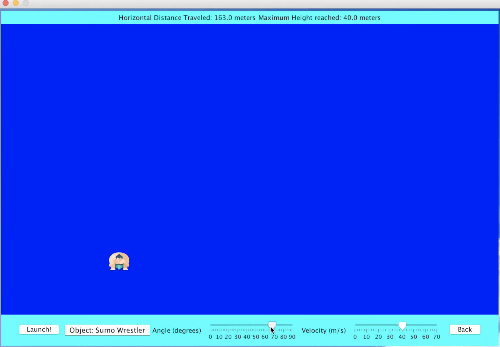

Fakebook is a fully-functioning social web app with a variety of features built into it, including user
registration, login validation, following friends, posting and commenting on articles, and customizing profiles.
The application uses HTML/CSS, JavaScript, and the React Library for the frontend, a REST API for client-server
communication, Node.js/Express.js for the backend, and MongoDB/Mongoose.js for the database. Other web related
techniques include CORS, session ID management using cookies or Redis, secure hashed and salted passwords, and 3rd party
authentication. Test-driven development was applied to reach 80% code coverage. Unit testing was performed using
Jest, Enzyme, and Jasmine.

RiceApps is a student-run organization that developes web apps for local communities of Rice and the
Greater Houston area. As part of RiceApps, I worked on Hatch, a Rice University scheduling app reaching
500+ student users. I helped develop the backend of a 4-year degree planner that allows students to
view their current schedule, add custom courses or notes, save a course, or modify individual semesters.
The technologies I used includesd React.js, GraphQL, MongoDB, Mongoose.js, and GraphQL Playground. RiceApps
has given me the opportunity to use new languages, frameworks, and practices in an agile team.

My Website!
JavaScript, HTML/CSS, GitHub Pages
This website is a fun project I took on to learn more about front end web development. I built
it entirely from scratch, and it is deployed on GitHub Pages with the domain managed by Google Domains.
Along the way, I learned and applied cool techniques like preconnecting to links that contain lots of data
sent over the network, which significantly increased the loading speed of my photography page. I also found
a trick to easily fetch the data from my contact form and auto-populate it into a google sheet using a Google Apps
Script. The main page was the most fun to build, as I learned a lot how to make a visually clean, yet appealing site.
Java Game - Parametric Power
Java, Java Swing, Object-Oriented Design
This was a 2D Kinematics physics game I built that included an
interactive tutorial about kinematics, a quiz, and a real-time projectile
launching simulation. The game helps users learn about the basics of
real world physics, and primarily uses the Java Swing toolkit for the GUI.
